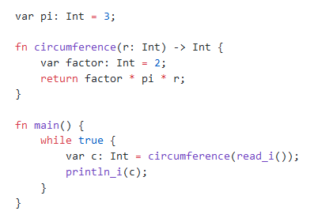
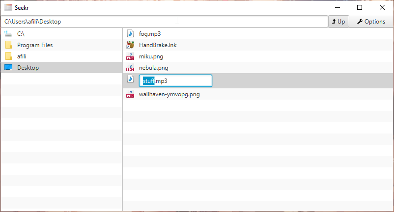

hello world
Hi! I'm Anton, a software developer based in Barnaul, Russia.
I've been programming since 2015, and in that time I have worked with many different technology stacks, paradigms and areas of knowledge. I've tried my hand in everything from web development to compiler design, and I am comfortable tackling most engineering challenges.
I strive to write readable, maintainable, and performant code with clean architecture and high test coverage.
my skills
Currently I primarily use
 Kotlin
for desktop application development.
Kotlin
for desktop application development.
I have good experience and can quickly get up to speed with
- React and Vue.js for front-end development;
- C/C++ and Rust for close-to-the-metal programming;
- and SQL for all my database needs.
I haven't used in a while, but generally understand Haskell and Python.
my projects
Over the years I have worked on numerous little projects, most of which you can find on my GitHub and GitLab. Here are some of the more notable ones:
Jute
(github)A toy programming language made in ~1000 lines of C. Features basic type checking and native execution via LLVM. I had hoped to make a modern successor to C, but alas, writing a compiler in C turned out to be pretty painful. Well, at least it can handle Fizzbuzz.
Minekong
(github)An aesthetically pleasing implementation of good old Minesweeper in React/Redux. Supports both mouse- and touch-optimized control schemes. Made with the purpose of learning React, but it's honestly quite addictive. Just don't ask about the name.
Seekr
(github)A simple file browser written in Kotlin with TornadoFX. Supports navigation history, deleting and renaming files, updating on detecting external changes and other fancy things. Also a learning project, but it works well.
